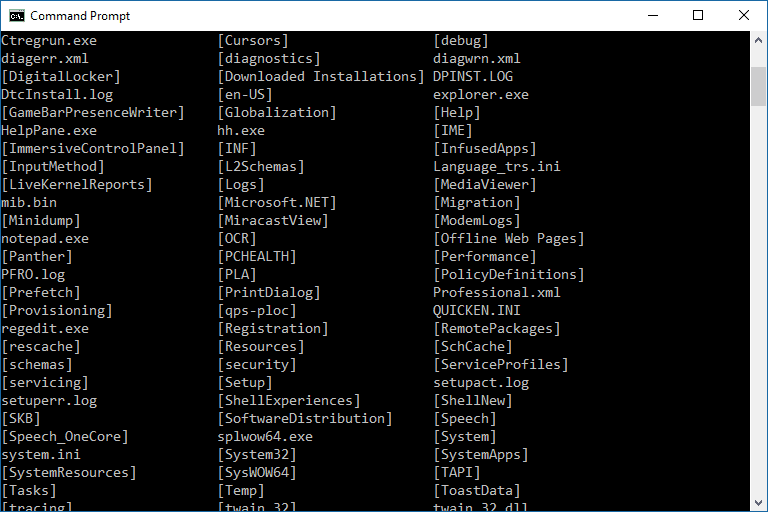

Cuprins
Ce este CMD?
CMD e o consola în care îi dai Windows-ului comenzi directe, prompte, bazate doar pe text. Vezi tu, sunt două feluri în care să umbli pe calculator.
Unul e interfața grafică, unde mergi cu mouse-ul prin ferestre și alegi ce vrei din pictogramele colorate, iar altul e linia de comandă
unde îi zici exact Windows-ului ce vrei să facă. În acest caz, CMD. În spatele interfeței grafice, click-urilor pe care le faci cu mouse-ul,
ferestrelor și meniurilor, se află un interpretor de comenzi care are aceeași esență ca și interpretarea comenzilor din CMD, deci CMD-ul e o
forma pură de interacționare cu calculatorul. CMD-ul se poate accesa printr-un fișier executabil, de obicei cmd.exe sau command.com, pe care le deschizi
de obicei din căsuța Run. Ca să intri în CMD, dacă ai Windows XP intră în Start -> Run, scrie cmd și dă-i enter. Dacă ai Windows 7 intră în start și scrie
direct cmd în căsuța de căutare.
Lista de comenzi CMD
ARP - Address Resolution Protocol (utilitar pentru configurarea protocolului de rezolvare a adreselor)
ASSOC - Schimba asocierea extensiilor de fisiere
AT - Fa sa se deschida automat un program la o data specifica
ATTRIB - Schimba atributele fisierelor
BOOTCFG - Editeaza setarile de boot ale Windows-ului
CACLS - Schimba permisiunile fisierelor
CALL - Apeleaza un program batch din altul
CD - Schimba folderul / sari la un folder specific
CHKDSK - Scaneaza hardul de erori
CHKNTFS - Scaneaza sistemul de fisiere NTFS
CLEANMGR - Utilitar de curatare automata a fisierelor temporare si golire din Recycle Bin
CLS - Goleste ecranul
CMD - Porneste din nou fereastra CMD
COLOR - Schimba culorile textului si fundalului
COMP - Compara continutul a doua fisiere sau seturi de fisiere
COMPACT - Comprima fisiere sau foldere (intr-o partitine NTFS)
CONVERT - Converteste o partitie FAT intr-una NTFS
COPY - Copiaza fisiere dintr-o locatie in alta
DATE - Afiseaza sau modifica data
DEFRAG - Defragmenteaza hard disk-ul
DEL - Sterge fisiere
DELTREE - Sterge un folder si toate folderele care mai sunt in el si in acestea
DIR - Arata o lista de fisiere si foldere care sunt pe hard
DISKPART - Utilitar de administrare a hardisk-urilor si partitiilor
DOSKEY - Editeaza linia de comanda, reapeleaza comenzi, si creaza macro-uri
DRIVERQUERY - Arata toate driverele instalate
ECHO - Afiseaza un mesaj pe ecran
ENDLOCAL - Opreste localizarea schimbarilor intr-un fisier batch
ERASE - Sterge fisiere
EVENTCREATE - Adauga un mesaj in log-ul de evenimente Winsows
EXIT - Iesi din CMD
EXPAND - Decompreseaza fisierele .cab (.cab sunt fisiere arhiva)
FC - Compara doua fisiere
FIND - Cauta un text intr-un fisier
FINDSTR - Cauta siruri de text in fisiere
FOR - Comanda de buclare (loop) cu aceasta comanda poti face sa se repete o operatie de un anumit numar de ori.
FOR /F - Comanda de buclare anume pentru un set de fisiere
FORMAT - Formateaza un hard sau o partitie
FSUTIL - Utilitare pentru fisiere si partitii
FTP - File Transfer Protocol (protocol pentru transfer de fisiere)
FTYPE - Arata ce program deschide un anume tip de fisier
GETMAC - Arata adresa MAC (adresa fizica) a placii de retea
GOTO - Instructiune de salt la o anume pozitie dintr-un program BATCH
GPRESULT - Arata informatii despre utilizator si windows, rezultatul "politicii" de utilizare
GPUPDATE - Updateaza setarile politicii utilizatorilor
HELP - Arata o lista de comenzi utile
HOSTNAME - Arata numele alculatorului
IF - E pus pentru a executa o comanda in functie de decizie. Nu e de sine statator.
IPCONFIG Configurare IP si informatii despre conexiunile la internet
LABEL - Schimba numele unei partitii
LOGMAN Gestioneaza log-urile indicatorului de performanta
LOGOFF - Delogheaza un user
MAKECAB - Creaza fisiere .cab
MEM - Arata informatii despre solicitarea memoriei
MD - Creaza foldere
MODE - Configureza un dispozitiv COM/LPT/CON
MORE - Arata continutul unui fisier
MOUNTVOL - Gestioneaza locatia de montare a unui volum
MOVE - Muta fisiere dintr-un folder intr-altul
MSG - Trimite un mesaj unui user
MSIEXEC - Arata informatii despre installer-ul default Windows
MSTSC - Conexiune intre terminal si server (protocol de accesare PC la distanta)
NET - Gestioneaza resursele retelei
NETSH - Configureaza interfetele de retea, firewal-ul si accesul la distanta
NBTSTAT - Arata statisticile de retea (protocolul NetBIOS prin TCP/IP)
NETSTAT - Arata statisticile de retea (protocolul TCP/IP)
NSLOOKUP - Gaseste locatia unei anumite adresa IP a unui client sau server si iti arata informatii.
NTBACKUP - Faci back-up la fisiere
OPENFILES - Arata informatii despre fisierele deschise
PATH - Arata sau seteaza calea unde se afla comenzile
PATHPING - Urmareste o adresa si arata intarzierea si numarul de pachete pierdute
PAUSE - Suspenda executia unui fisier batch si iti arata "Press any key to continue..."
PERFMON - Indicator de performanta
PING - Testeaza daca o adresa functioneaza sau nu
POPD - Returneaza un folder initial salvat cu PUSHD
POWERCFG - Configureaza setarile de energie
PRINT - Scoate la imprimanta un fisier text
PRNMNGR - Adauga, sterge si listeaza imprimantele si conexiunile cu acestea
PROMPT - Schimba numele promptului ce apare de fiecare data langa ce scri
PUSHD - Salveaza apoi modifica folderul curent
RASDIAL - Gestioneaza conexiunile RAS (Remote Acces Service - serviciu de acces la distanta)
RASPHONE - Gestioneaza conexiunile RAS
RECOVER - Recupereaza un fisier corupt de pe un hard defect
REG - Citeste, seteaza, exporteaza sau sterge chei sau valori din registru
REGEDIT - Editeaza registrul
REGSVR32 - Inregistreaza fisiere .dll
REGINI - Schimba permisiunile registrului
REM - Comanda pentru comentarii intr-un fisier BATCH
REN - Redenumeste fisiere
REPLACE - Inlocuieste un fisier cu altul
RESET SESSION - Reseteaza o sesiune de conexiune PC la distanta
RD - Sterge foldere
ROUTE - Manipuleaza tabelele de rutare ale retelei
RUNAS - Executa un program sub alt user
RUNDLL32 - Executa o comanda pentru .dll-uri
SC - Controleaza serviciile
SCHTASKS - Fa sa se deschida automat un program la o data specifica
SET - Modifica sau creaza variabile de sistem
SETLOCAL - Controleaza vizibilitatea variabilelor de sistem
SFC - Verifica fisierele de sistem
SHARE - Afiseaza sau editeaza fisiere sau imprimante partajate
SHIFT - Repozitioneaza parametrii intr-un fisier batch
SHORTCUT - Creaza o scurtatura pentru un fisier
SHUTDOWN - Opreste calculatorul
SLEEP - Face pauza pentru un numar specific de secunde
SORT - Sorteaza intrarile sistemului
START - Porneste un program. Daca nu e specificat niciun program, o sa porneasca o noua fereastra CMD
SUBST - Asociaza o cale cu o litera de partitie sau hard
SYSTEMINFO - Arata informatiile despre calculator
TIME - Arata sau modifica ora
TITLE - Modifica titlul ferestrei CMD
TRACERT - Depisteaza calea unei adrese IP
TSDISCON - Deconecteaza o sesiune de conexiune PC la distanta
TSKILL - Opreste un proces care ruleaza
TSSHUTDN - Opreste sau restarteaza de la distanta un server
TYPE - Arata continutul unui fisier text
TYPEPERF - Scrie informatii despre performanta PC-ului intr-un log text.
VER - Arata informatii despre versiunea Windows-ului
VERIFY - Verifica daca un fisier a fost salvat
VOL - Arata numele partitiei sau hard disk-ului
WMIC - Comenzi pentru WMI (Windows Management Instrumentation - Instrumente de gestionare Windows)
WUAUCLT - Update-uri Windows
XCOPY - Copiaza fisiere si foldere
Importanța CMD
Command Line poate fi o unealta foarte puternica pentru optimizarea unui computer, uneori chiar mai rapida si mai folositoare decat interfata grafica.
